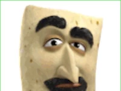
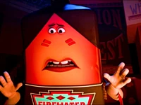
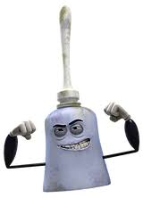

SAUSAGE PARTY
PLOT
Ok, tu sais comment dans les films d'animation, les objets prennent vie ? Eh bien, imagine ça dans un supermarché, où tous les aliments ont leur propre personnalité. C'est là que ça devient drôle : une saucisse découvre la vérité sur ce qui se passe quand les gens les achètent, et c'est vraiment pas ce à quoi ils s'attendaient.
NB: Pas de jugement, c'est mon film préféré
PERSONNAGES
Une saucisse ambitieuse avec une grande personnalité et un désir intense de découvrir la vérité sur ce qui se passe au-delà des rayons du supermarché. Il est comme le leader de cette aventure comique, mais il est aussi un peu... grillé.
Une petite pain à hot-dog douce et sexy, mais pas trop intelligente, qui partage les rêves de Frank. Elle a ce côté un peu "paniqué dans la boulangerie" qui la rend totalement hilarante.
Le vieux rouleau de papier toilette du coin. Il a vu des choses, tu sais, des choses que tu ne voudrais jamais voir, surtout pas dans un supermarché. Il est un peu grincheux, un peu sage, mais surtout, il est là pour donner des conseils inattendus sur la vie. Il peut sembler banal, mais c'est juste parce qu'il a un talent pour rester calme, même lorsque tout le monde autour de lui part en vrille. Il est le pilier silencieux du groupe, même s'il ne dit pas grand-chose.

Une boîte de lavash moyen-orientale, Kareem est comme le gars cool du coin, toujours prêt à offrir un peu de sagesse du Moyen-Orient avec son accent exotique. Il apporte une saveur internationale au groupe et sait comment garder son calme même dans les situations les plus épicées. Et son amitié avec Frank et les autres est aussi solide que la croûte d'un bon pain.

Le vieux bidon de sirop d'érable, avec un style de gourou mystique et une voix aussi douce que le sirop lui-même. Il est là pour révéler les mystères profonds du supermarché et de l'univers. Avec sa sagesse enfumée et son allure de chaman, il guide nos héros dans leur quête pour la vérité, mais attention, car derrière cette apparence zen se cache un sens de l'humour aussi sucré qu'une cascade de sirop d'érable.

Imaginez un gobelet de moutarde avec une attitude de gros bras de salle de sport et un vocabulaire qui ferait rougir un marin. C'est Douche, le personnage qui est prêt à éclater en mode berserk à tout moment. C'EST L'ANTAGONISTE PAR CONTRE
Sites des voix principales